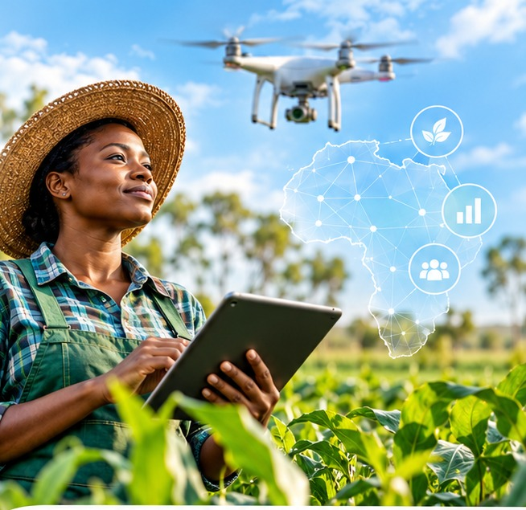
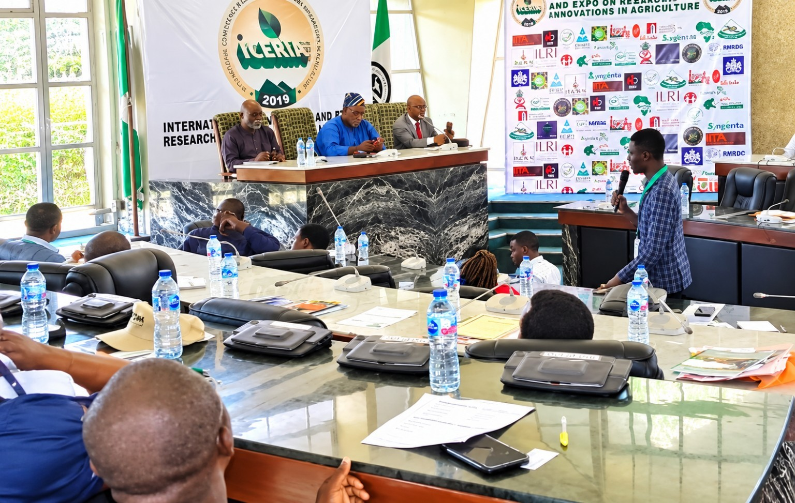
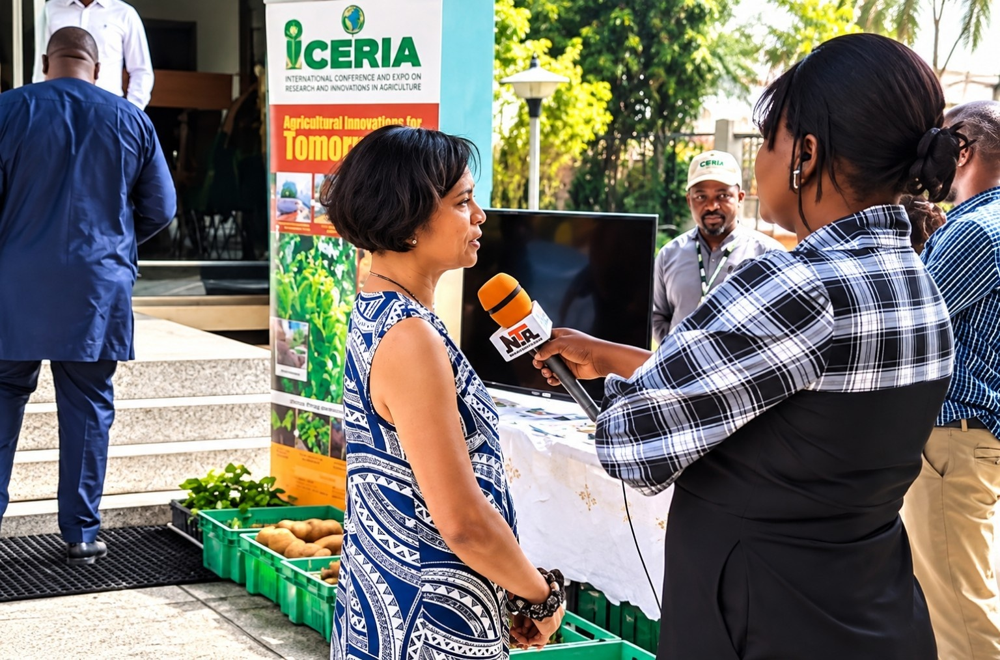
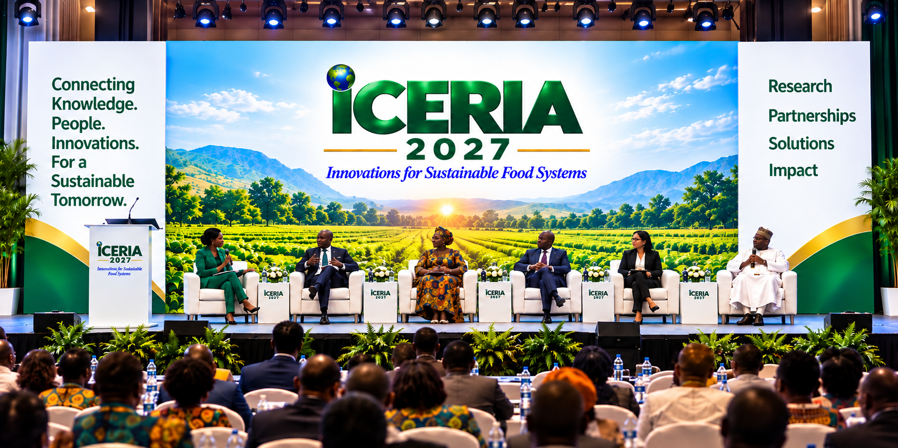
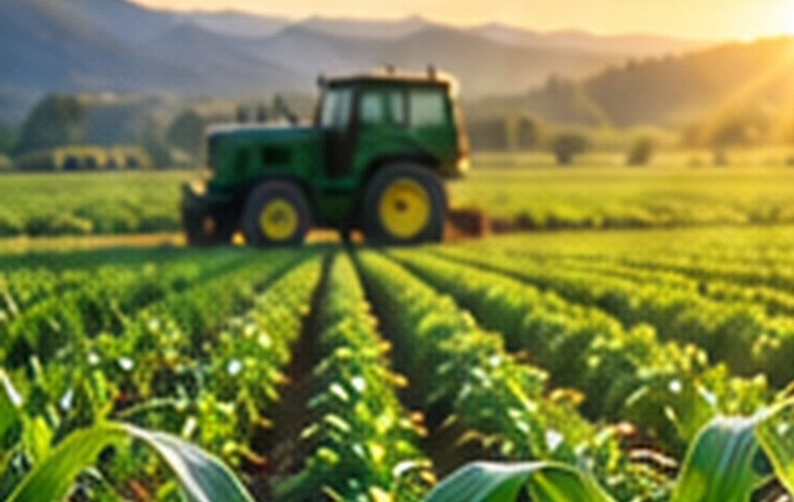
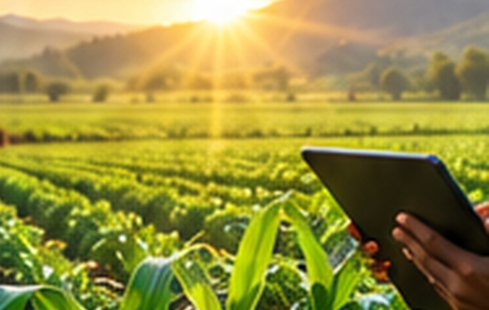
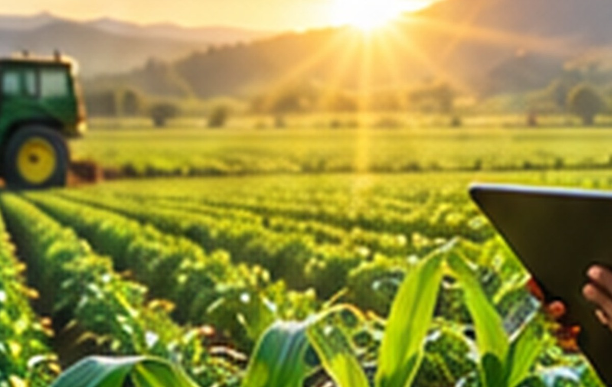

Research, Innovation and Real-World Impact
THE ENDURING ICERIA PLATFORM
ICERIA
International Conference and Expo on Research and Innovations in Agriculture
Research. Innovation. Partnerships. Impact.
A continuing platform connecting agricultural research, innovation, policy, enterprise, investment, knowledge exchange and practical impact.
ICERIA 2027 • KEY EVENT INFORMATION
DATE
16 March 2027
VENUE
Nigerian Institute of International Affairs (NIIA)
THEME
CATALYSING COMMERCIALIZATION AND ADOPTION OF RESEARCH OUTCOMES AND INNOVATIONS FOR FOOD SUFFICIENCY AND ECONOMIC GROWTH OF AFRICA.
13/15 Kofo Abayomi Street, Victoria Island, Lagos, Nigeria.
ICERIA IN ACTION
Research, dialogue and people at the centre of the platform
ICERIA brings research, innovation, institutions, enterprise and knowledge communities together through conference dialogue, exhibitions and partnerships.
Explore the Gallery →
THE ICERIA JOURNEY
A growing platform for greater impact
From the maiden edition to the current edition, ICERIA continues to bring people, ideas and opportunities together to advance sustainable food systems in Africa and beyond.

2019
Maiden Edition
The journey began at the Nigerian Institute of International Affairs, Lagos.
View 2019 archive →
2020
Second Edition
A digital edition extending the conversation on sustainable agricultural innovation and food security.
View 2020 archive →
2027
Current Edition
16 March 2027
NIIA, 13/15 Kofo Abayomi Street, Victoria Island, Lagos.
ICERIA 2027 • CURRENT EDITION
CATALYSING COMMERCIALIZATION AND ADOPTION OF RESEARCH OUTCOMES AND INNOVATIONS FOR FOOD SUFFICIENCY AND ECONOMIC GROWTH OF AFRICA
Research
→
Innovation
→
Validation
→
Commercialisation
→
Adoption
→
Food Sufficiency
→
Economic Growth
THE PLATFORM IN ACTION
One platform. Multiple ways to connect.
ICERIA combines conference dialogue, exhibitions, knowledge exchange, partnerships and an enduring record of agricultural research and innovation.
Ideas, evidence & dialogue
Keynotes, plenaries, research presentations and expert panels.
View programme →Research meets enterprise
Showcase technologies, products, research outcomes and investment opportunities.
Explore Expo →Outcomes that travel
Resources, research stories, innovation communication and knowledge exchange.
Explore resources →Connections for impact
Institutional collaboration, sponsorship, exhibition and strategic networking.
Partner with ICERIA →
FROM RESEARCH TO IMPACT
Research & Innovation →
Turning knowledge into practical solutions for food systems
ICERIA provides a platform for research outcomes and innovations to be communicated, connected with enterprise and investment, and discussed in relation to validation, commercialisation, adoption and impact.
Research outcomes
Innovation showcase
Commercialisation
Adoption pathways

THE DOCUMENTARY RECORD
Documenting the ICERIA journey
The ICERIA website now carries a consolidated documentary record of the platform from 2019 and 2020 to the current ICERIA 2027 chapter.
Read the Documentary Report →
ICERIA STORIES & INSIGHTS
From the archive to the next chapter
Selected stories from the ICERIA journey explain the questions, lessons and opportunities connecting agricultural research and innovation with commercialisation, adoption and impact.
2019 → 2020 → 2027
How the ICERIA platform has evolved across its editions.
Read the story →From Research to Impact
Why research outcomes need pathways into practical use.
Read the story →ICERIA 2027
The next chapter focuses on commercialisation, adoption and impact.
Read the story →Why Be Part of ICERIA 2027?
What researchers, farmers, innovators, investors and institutions can connect around.
Read the story →
NEWS & MEDIA
Latest updates and historical coverage
News, announcements, stories and documented coverage from ICERIA and its editions.

BusinessDay
Research findings must go beyond bookshelves before agriculture develops — ICERIA
Historical coverage from the 2019 edition.
Read in News & Media →
The Guardian
Stakeholders discuss stronger collaboration for agricultural research
Historical coverage from the ICERIA journey.
Read in News & Media →
ICERIA Archive
From physical conference to digital knowledge exchange
The 2020 edition extended the platform digitally.
Read in News & Media →
Netherlands representation
Bram Wits and international agricultural dialogue
A preserved visual record from ICERIA 2020.
Read in News & Media →
RESEARCH, DEVELOPMENT & KNOWLEDGE ECOSYSTEM
Research, development and knowledge ecosystem
ICERIA's institutional record includes participation and collaboration across research, development, policy, enterprise and knowledge organisations. The organisations shown below are presented as historical/reference ecosystem participants; their appearance does not by itself indicate a confirmed ICERIA 2027 partnership.
For the fuller institutional record, including NBRDA and other historical/reference participants, see
Partners & Participation →
DOCUMENTED PARTICIPATION
People and institutions in the ICERIA record
Historical participation is preserved as part of the platform's institutional story.
Mr. Brian Christopher Udoh
Agriculture Policy Officer, Embassy of the Kingdom of the Netherlands. Participated as presenter and panelist at ICERIA 2019.
Bram Wits
Regional Agricultural Counsellor for West Africa, Embassy of the Kingdom of the Netherlands (West Africa regional context including Ghana). Preserved in the ICERIA 2020 visual record.
IITA participation
Katherine Lopez, Yinka Fasogbon, Osunde Timilehin, Victor Saleh, Oyeyemi Azeez, Paul Emmanuel, Oiwoja Odihi and Tunde Sulaiman were documented as participants.
Dr. Kanayo Nwanze
Former President of the International Fund for Agricultural Development (IFAD) and documented keynote speaker at ICERIA 2019.